---
{
  "layout": "note",
  "title": "Generative Adversarial Network(GAN)",
  "journal": true,
  "section": "Study",
  "topic": "Deep learning",
  "excerpt": "지금까지 우리는 Supervised Learning에 대해서 알아보았다. 즉, 어떠한 데이터를 우리가 정답이랑 같이 model에 줌으로써, 모델을 이 새로운 데이터를 만났을 때, 학습을 바탕으로 판단하도록 학습시키는 방식이다. 그러면",
  "classes": "wide",
  "permalink": "/blog/ai/deep-learning/generative-adversarial-networkgan/",
  "study_area": "AI",
  "date": "2024-12-11",
  "source_url": "https://jeffdissel.tistory.com/141",
  "header": {
    "teaser": "/blog/ai/deep-learning/generative-adversarial-networkgan/images/img-001.png"
  }
}
---
{% raw %}<p>지금까지 우리는<br />
Supervised Learning에 대해서<br />
알아보았다.<br />
즉, 어떠한 데이터를 우리가 정답이랑 같이<br />
model에 줌으로써,<br />
모델을 이 새로운 데이터를 만났을 때,<br />
학습을 바탕으로 판단하도록<br />
학습시키는 방식이다.<br />
그러면, 사용자가 데이터를 주지 않아도,<br />
모델을 학습시킬수는 없을까?<br />
사용자가 데이터가 부족하거나 없을 수 있으니까.<br />
이를 달성한 모델이 바로,<br />
Generative model<br />
이다.<br />
아래 사진을 보면,<br />
generator - generative model<br />
은<br />
random noise(저차원정보)<br />
를 활용하여,<br />
사진을 하나 만들어 낸다.<br />
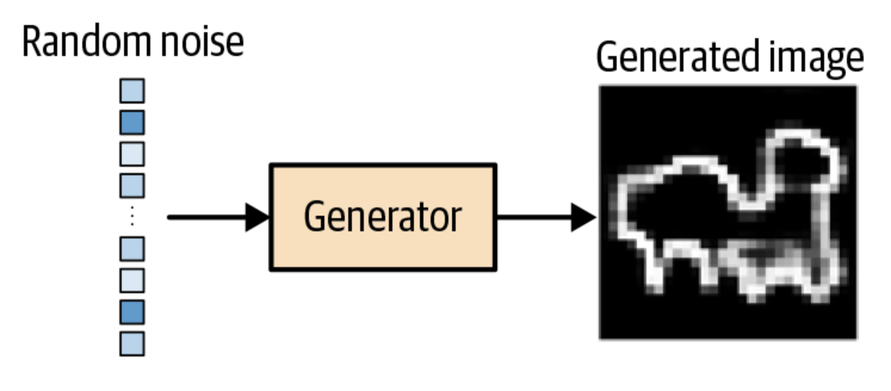<br />
중요한것은 random . 한 noise라는 것이다.<br />
따라서, 사용자가 임의로 집어 넣은 input(supervised learning)과는<br />
다른 unsupervised Learning이라는 것.<br />
예시를 통해서 정확히 다시 이해해 보자.<br />
input distibution - normal distribution으로<br />
고정된 모양과 값을 가진 정규분포 확률함수라고 하자.<br />
그랬을때, 중간 과정의 함수에 따라서,<br />
output 이 다르게 나올 것이다.<br />
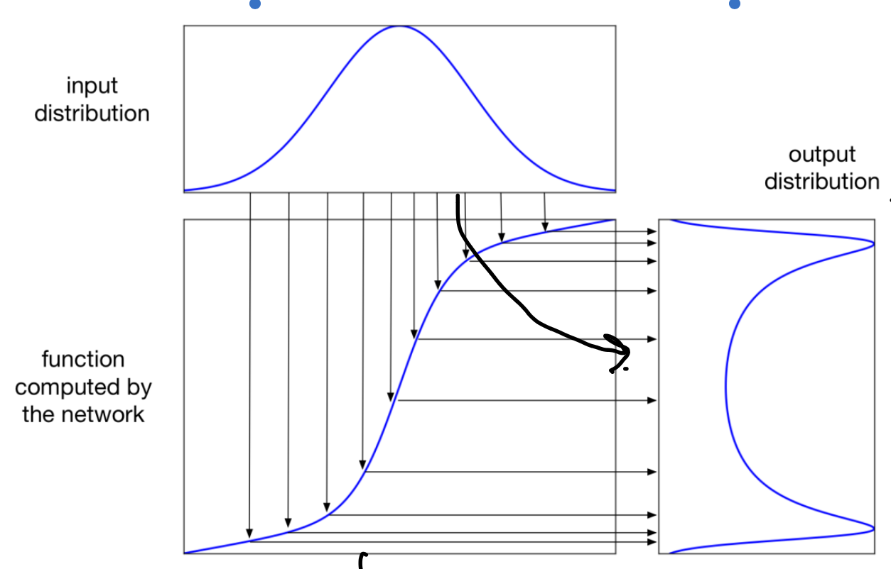<br />
따라서, random noise - input과는<br />
상관없이<br />
generator model(중간 변환박스)<br />
에 따라서<br />
output을 결정할 수 있다는 것이다.<br />
즉, 원하는 output을 얻기위해,<br />
정규분포의 input은 fix<br />
중간 박스<br />
generator model을 학습한다.<br />
그렇다면,<br />
정확히 어떻게 가운데 mapping상자를 훈련시켜야<br />
random noise로 부터, 원하는 output을 얻을 . 수 있을까?<br />
simple 하게<br />
true data 와 generator가 만든<br />
데이터 2개를 비교하면 된다.<br />
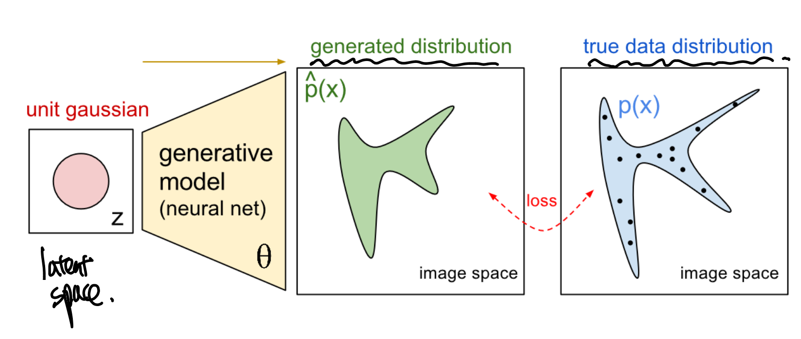<br />
하지만 여기서 문제가 발생한다.<br />
지금 우리가 보고 있는 output은 image 2D이지만,<br />
굉장히 차수가<br />
높은 고차원 공간<br />
이라면,<br />
generated data,<br />
true data두개를 비교하기란 쉽지 않다.<br />
이 문제를 해결하기 위해.<br />
generator가 만든 output과<br />
true output을 비교해주는<br />
'discriminator'<br />
이라는 모델을 따로 설정한다.<br />
Discriminator는,<br />
Generator가 만든 가짜 사진<br />
+ 사용자가 준 진짜 사진<br />
을 보고,<br />
진짜와 가짜를 구분하는 역할을 한다.<br />
이게 바로,<br />
Generative Adversial Networks(GAN)<br />
의 핵심이다.<br />
다시말해,<br />
Generator는 진짜 같은 가짜사진을 만드는 것이 목적이고<br />
(faker)<br />
Discriminator는 Generator가 만든 사진과 진짜 사진을 보고,<br />
뭐가 진짜고 가짜인지를 제대로 구분하는 것이 목적이다.<br />
(!!!!discriminator도 훈련으로 학습되는 모델임)<br />
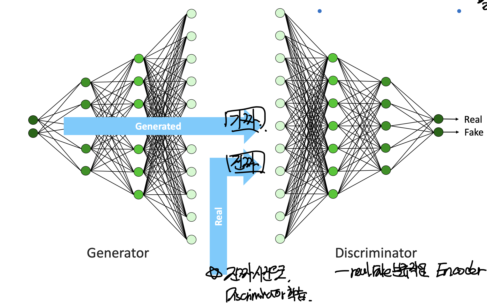<br />
GAN model structure<br />
이제,<br />
학습과정에서 loss함수를 주목해보자.<br />
discriminator 도 결국 train되는 모델이므로,<br />
진짜를 진짜라고, 가짜를 가짜라고 할 경우<br />
loss 값이 줄어들도록 설계한다.<br />
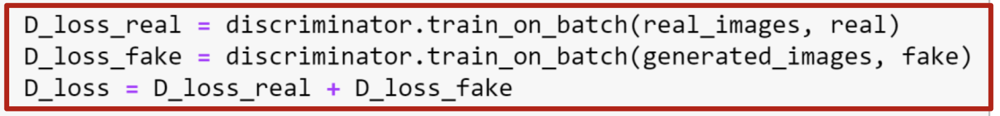<br />
Generator loss같은 경우,<br />
자기가 만든 사진이 최종 output에서 real이라고 나올 경우<br />
, loss값이 줄어들도록 설계한다.<br />
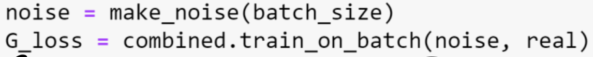<br />
(Combined = genreator, discriminator 합친 전체 모델<br />
- 앞의 생략한 tensorflow code에서 정의하였습니다.)</p>
<hr />
<p>위의 구조는 Autoencoder처럼 ANN의 구조로 이루어져 있지만,<br />
CAE처럼 CNN구조로 만든 GAN도 존재한다.<br />
(자세한 내용은 생략)<br />
Deep-Convolutional GAN<br />
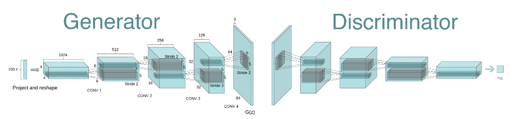</p>
<hr />
<p>Conditional GAN<br />
basic GAN은 오직 latent space로부터,<br />
output을 만들어 낸다.<br />
이는 2가지 문제점이 존재한다.<br />
1. latent space만 보고 어떤 결과가 나올지 알 수 없다.<br />
(latent space - random 하므로)<br />
2. 모든 클래스의 데이터가 균등하게 생성되지 않고, 다양성이 떨어진다<br />
(latent space 차원의 한계)<br />
따라서 이를  해결하는 방식이 바로,<br />
latent space<br />
+ label 정보<br />
를<br />
더하여, 이미지를 생성하도록 설계한<br />
Conditional GAN<br />
이다.<br />
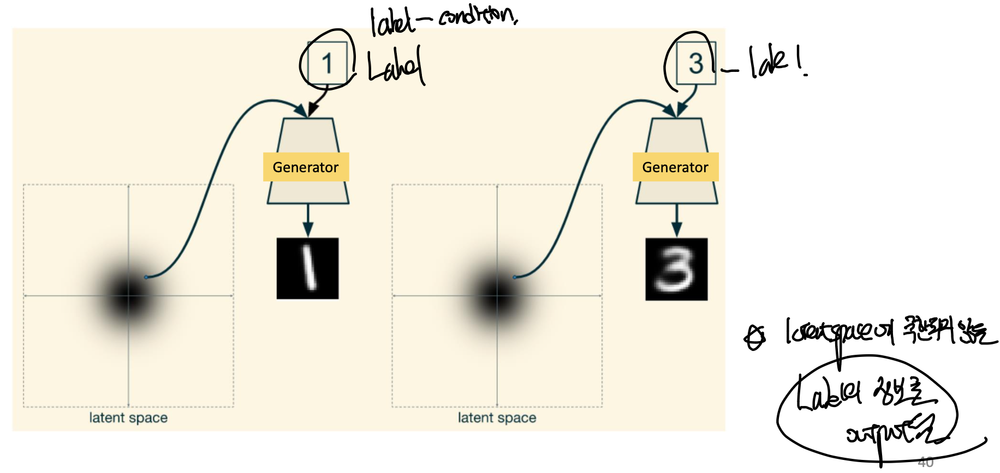<br />
Conditionial GAN</p>
<hr />
<p>Adversarial AutoEncoder<br />
GAN의 discriminator를 다른 model에도<br />
적용시킬 수 있다!!!<br />
(이전에 배운)<br />
autoeocnder의 구조는 다음과 같다.<br />
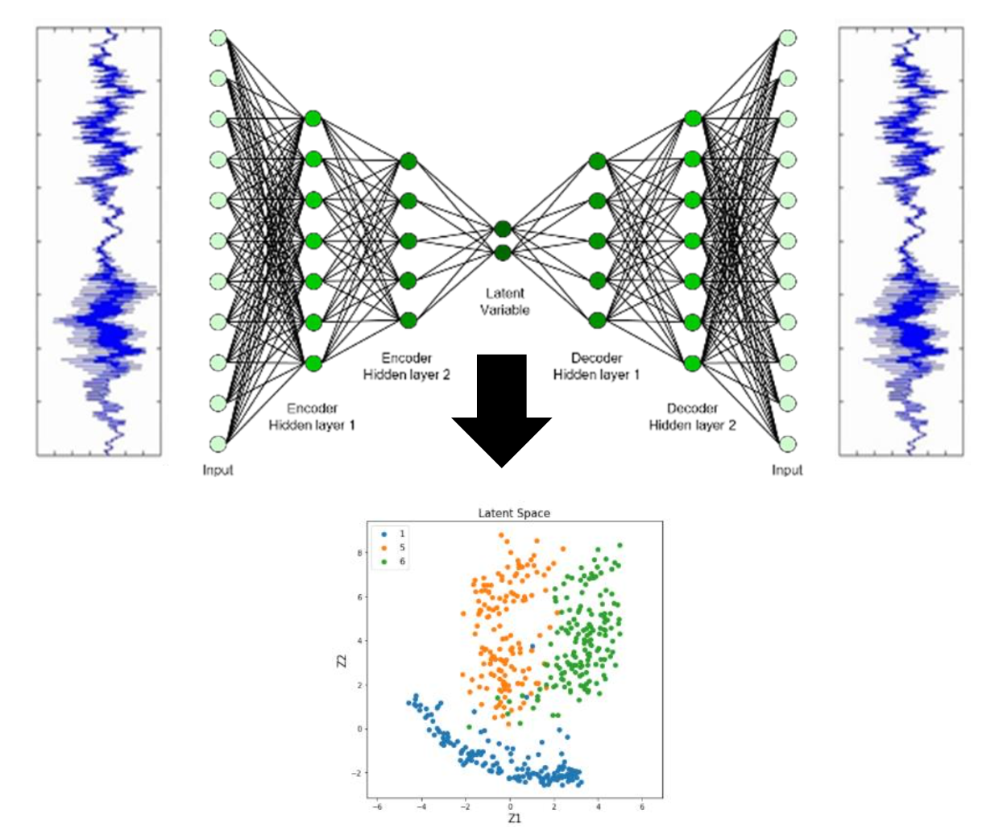<br />
여기서 discriminator를 왜 추가해주나??<br />
바로 latent space를<br />
정규분포 space로 강제로 변환<br />
시켜주기 위해서 이다.<br />
이렇게 밑에서 discriminator를 통해<br />
z가 정규분포를 따르도록 강제해준다.<br />
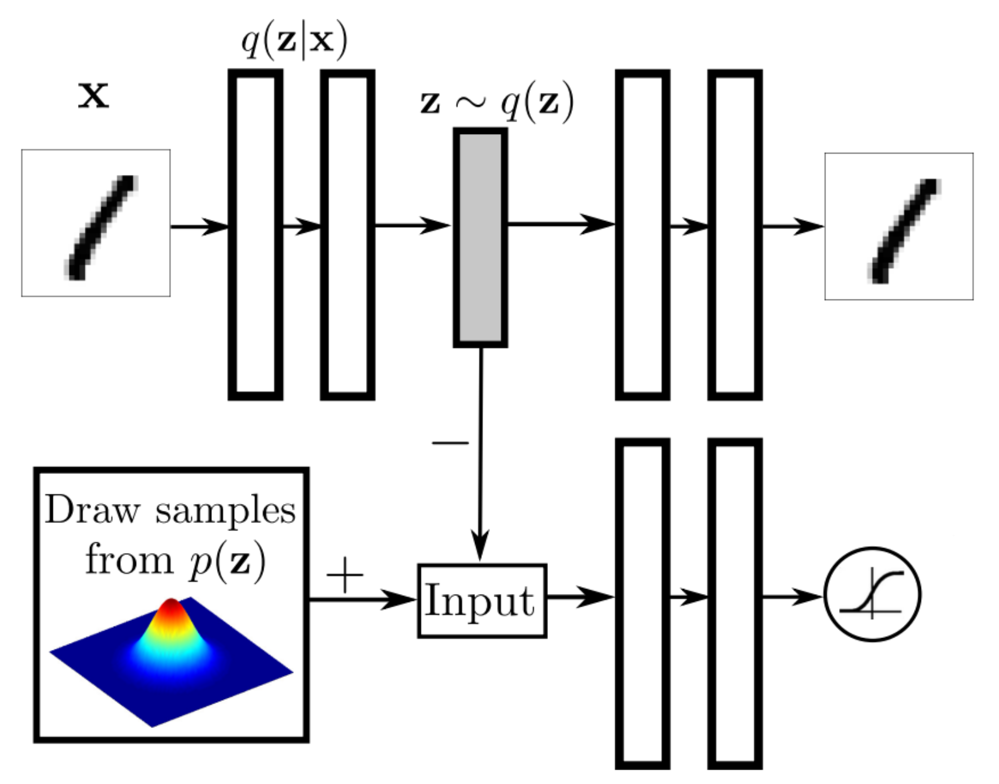<br />
그럼 z가 왜 도대체 정규분포를 따라야 좋은건가???<br />
우리가 오토 인코더에서 할 수 있는 작업 중 하나인,<br />
latent space -&gt; 사진<br />
을 디코더에서 한다고 가정하자.<br />
(이를 우리는 mapping<br />
작업이라고<br />
부른다)<br />
이때, 정규분포를 따르게 되면, 우리가 latent spac를<br />
용이하게 변화시키면서 output의 변화를 관찰할 수 있다.<br />
다시말해, latent space 조작이 훨씬 더 쉽다는 말이다.<br />
(우리는 walking on the latent space<br />
즉 latent space에서의 변환이 실제 사진을<br />
만드는데 어떤 영향을 주는지를 알고 싶어한다)</p>
<hr />
<p>Cycle GAN<br />
이번에는 paired image set을 제작하기 위한,<br />
(목적: unpair image -&gt; generate a pair image)<br />
cycle gan에 대해서 알아 보자.<br />
ex)<br />
우리의 목적: Horse 사진을 가지고, zebra사진을 만드는 모델 계발.<br />
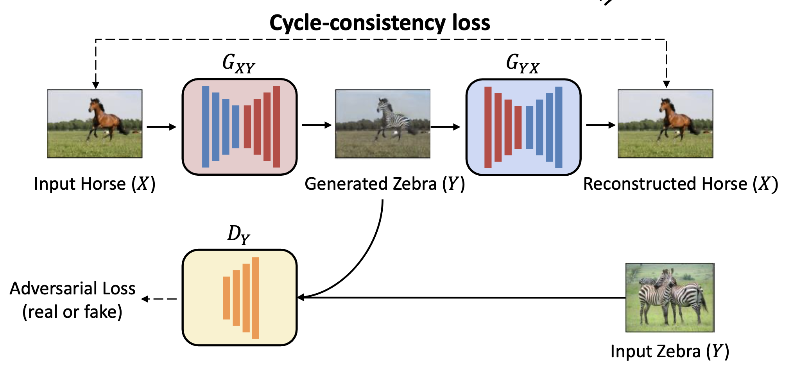<br />
위 구조를 보면, Cycle Gan은<br />
general GAN과 2가지 빼고 동일하다.<br />
1. input - latentspace가 아니라 진짜 사진이라는 점<br />
2.생성된 zebra사진을<br />
다시 symmetric한 generator를 통과하여 말사진으로 바꾸는점.<br />
Gxy 는 생성한 얼룩말 사진이 discriminator가 real로 판단하도록 학습하고,<br />
Discriminaotr는 real 과 fake를 구분하도록 학습한다.<br />
뿐만아니라, Generator는 얼룩말을 다시 Generator 역함수를 지났을때,<br />
원래 . 말사진이 나오도록 학습한다.<br />
따라서, 마지막 부분에 cycle-consistency loss가 기존 gan과 별개로 추가된다.</p>{% endraw %}
